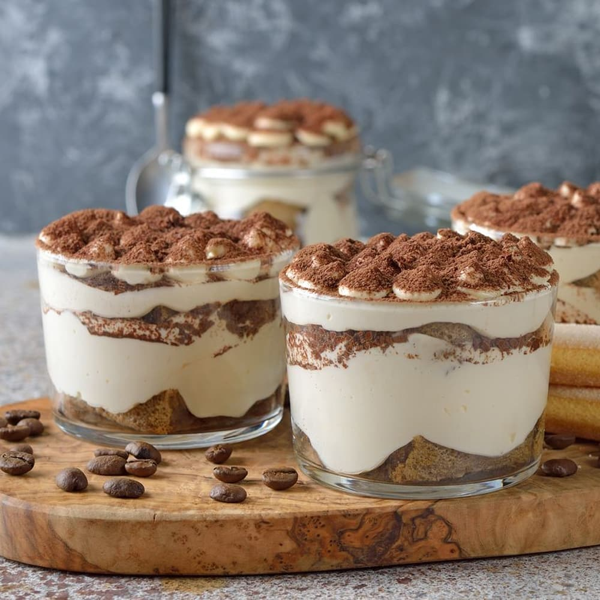

Recette du Tiramisu

Ingrédients :
Préparation :
- Séparez les blancs des jaunes.
- Fouettez les jaunes avec le sucre jusqu’à ce que le mélange blanchisse.
- Ajoutez le mascarpone et mélangez bien jusqu’à obtention d’une crème lisse.
- Montez les blancs en neige bien ferme et incorporez-les délicatement à la préparation.
- Trempez les biscuits à la cuillère dans le café froid, puis disposez-les dans le fond d’un plat.
- Recouvrez les biscuits de la préparation au mascarpone.
- Répétez l’opération (biscuits + crème) pour une ou deux couches supplémentaires.
- Laissez reposer au réfrigérateur pendant au moins 4 heures, voire toute une nuit.
- Avant de servir, saupoudrez généreusement de cacao en poudre.
Retour à l'accueil